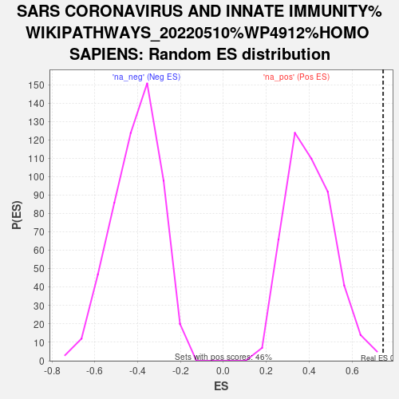

| | | Dataset | deg_ms |
| Phenotype | NoPhenotypeAvailable |
| Upregulated in class | na_pos |
| GeneSet | SARS CORONAVIRUS AND INNATE IMMUNITY%WIKIPATHWAYS_20220510%WP4912%HOMO SAPIENS |
| Enrichment Score (ES) | 0.74560547 |
| Normalized Enrichment Score (NES) | 1.8490103 |
| Nominal p-value | 0.0021786492 |
| FDR q-value | 0.73963815 |
| FWER p-Value | 0.838 |
Table: GSEA Results Summary
 Fig 1: Enrichment plot: SARS CORONAVIRUS AND INNATE IMMUNITY%WIKIPATHWAYS_20220510%WP4912%HOMO SAPIENS
Fig 1: Enrichment plot: SARS CORONAVIRUS AND INNATE IMMUNITY%WIKIPATHWAYS_20220510%WP4912%HOMO SAPIENS
Profile of the Running ES Score & Positions of GeneSet Members on the Rank Ordered List
| SYMBOL | RANK IN GENE LIST | RANK METRIC SCORE | RUNNING ES | CORE ENRICHMENT | | 1 | STAT2 | 7 | 6.144 | 0.2141 | Yes |
| 2 | IRF9 | 16 | 5.656 | 0.4110 | Yes |
| 3 | MAVS | 114 | 3.829 | 0.5362 | Yes |
| 4 | IRF3 | 404 | 2.662 | 0.6037 | Yes |
| 5 | TYK2 | 550 | 2.327 | 0.6722 | Yes |
| 6 | IKBKE | 596 | 2.214 | 0.7456 | Yes |
| 7 | STAT1 | 3090 | 0.513 | 0.5434 | No |
| 8 | TRAF3 | 4008 | 0.283 | 0.4723 | No |
| 9 | IFNAR1 | 5469 | 0.030 | 0.3445 | No |
| 10 | IFNAR2 | 5752 | -0.004 | 0.3197 | No |
| 11 | TICAM1 | 6606 | -0.150 | 0.2497 | No |
| 12 | IFIH1 | 7527 | -0.346 | 0.1805 | No |
| 13 | TLR3 | 8477 | -0.646 | 0.1193 | No |
| 14 | TBK1 | 9218 | -0.993 | 0.0887 | No |
| 15 | JAK1 | 10905 | -2.822 | 0.0384 | No |
Table: GSEA details [plain text format]

Fig 2: SARS CORONAVIRUS AND INNATE IMMUNITY%WIKIPATHWAYS_20220510%WP4912%HOMO SAPIENS: Random ES distribution
Gene set null distribution of ES for SARS CORONAVIRUS AND INNATE IMMUNITY%WIKIPATHWAYS_20220510%WP4912%HOMO SAPIENS